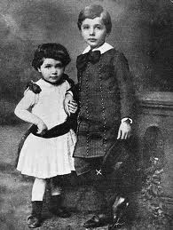
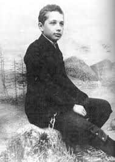
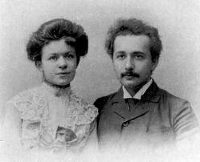

|  |
Un băiat neobişnuit
În copilărie, geniul lui Albert Einstein era departe de a se întrevedea. Era un copil retras, fapt pentru care era adesea batjocorit de către colegii de şcoală. Nu era un elev strălucit, în schimb, îi plăcea să citească tot felul de cărţi de popularizare a ştiinţei. Avea obiceiul să analizeze detaliat, din orice punct de vedere, orice gând, idee sau informaţie pe care o avea, păstrând însă tăcerea până când considera că mintea sa a epuizat acest subiect, lucru ce îi determina pe cei din jurul său să creadă că este retardat şi să-l dispreţuiască. Vedea şi observa lucruri pe care alţi copii de vârsta sa nici nu puteau să le conceapă. Această capacitate a sa va fi renumită în viitor, însă, în copilărie, micuţul Albert era considerat „îndărătnic” şi diferit.
S-a născut în Ulm, un oraş mic, din Germania. Tatăl său, Hermann, era fiul cel mai mare al familiei Einstein, de origine evreiască. Se spune că mama lui Albert, când l-a văzut prima dată pe nou-născut, era să leşine. Micuţul cântărea mai mult decât un copil normal şi avea capul umflat şi pătrăţos. Părinţii săi erau neliniştiţi şi se întrebau dacă pruncul dăruit de Dumnezeu era normal. Când Albert a ajuns la vârsta de trei ani, fără să articuleze un cuvânt, părinţii săi au crezut că este retardat şi şi-au pierdut orice speranţă. Însă mare le-a fost uimirea, când, într-una din zile, micuţul a deschis gura şi a început să vorbească cu fluenţa şi vocabularul unui adult. Ce se întâmplase? Copilul analizase până atunci utilizarea cuvântului, iar apoi a exteriorizat ceea ce învăţase.
Metoda autodidactă, dezvoltată încă din pruncie, a continuat să îi folosească şi pe durata anilor de şcoală. În timp ce interesul său pentru anumite materii plictisitoare de la şcoală era simulat, acest lucru nu se întâmpla când venea vorba despre fizică şi filozofie, materii care l-au captivat în mod real.
|
Părinţii lui Albert Einstein
Tatăl său, Hermann, era un mic întreprinzător, aşa cum erau cei mai mulţi evrei care trăiau în Europa în acea perioadă. După naşterea lui Albert, familia s-a mutat la Munchen, iar Hermann, împreună cu fratele său Iacob au pus bazele unui atelier de producere a echipamentelor electrice. Mama lui Einstein, Pauline, iubea mult muzica, era o pianistă remarcabilă, iar casa familiei răsuna întotdeauna de muzică. Datorită insistenţei acesteia, micuţul Albert a început lecţiile de vioară, devenind ulterior un bun violonist.
Când era foarte mic, tatăl său i-a arătat o busolă. Faptul că acul rămânea nemişcat indiferent de mişcarea busolei i-a provocat micuţului Albert o surpriză extraordinară, întrucât a conştientizat că există o putere nevăzută şi independentă, pe care nu o poate percepe. Ceea ce ţinea nemişcat acul busolei era magnetismul, care a fost descoperit în secolul al XIX-lea şi care a contribuit la obţinerea unor progrese tehnologice remarcabile. Einstein a simţit de mic copil că lumea văzută este guvernată de principii şi legi nevăzute.
|
Fuga din Germania
La vârsta de 11 ani, Albert Einstein a început să frecventeze un gimnaziu din Munchen, care oferea o educaţie de elită. Era o şcoală care funcţiona pe baza modelelor militare ale Germaniei . Profesorii făceau abuzuri de putere şi pretindeau elevilor respect şi supunere absolută. Albert ura disciplina şi activităţile colective, iar profesorii care îi aşezau pe elevi în rânduri, ţinând în mână cravaşe, i-au provocat repulsie şi desigur nu s-a putut adapta cerinţelor mediului şcolar.
Când a ajuns la vârsta de 15 ani, afacerile tatătui său nu mergeau prea bine în Germania, acesta hotărând să-şi caute norocul în altă parte. Şi-a mutat atelierul într-un oraş mic, de lângă Milano. Aşadar, familia sa a plecat în Italia, lăsându-l pe Albert singur, în Munchen, pentru a-şi continua studiile, într-o şcoală pe care el o detesta. Pe lângă regulile stricte, care reglementau viaţa şcolarilor, Albert avea un motiv mai important care nu-i permitea să mai rămână în ţara sa. În Germania, serviciul militar era obligatoriu după vârsta de 16 ani, iar Albert era hotărât să facă orice pentru a evita această obligaţie. Şi-a întocmit un plan pentru a nu rămâne la şcoala cu regim strict şi pentru a evita serviciul militar. L-a rugat pe un medic, pe care-l cunoştea, să-i elibereze o adeverinţă prin care susţinea că rămânerea sa în acea şcoală era riscantă pentru sănătatea sa mintală. În acest mod, Einstein a fugit din Germania, ţara în care îşi petrecuse anii copilăriei, şi a plecat în Italia, la familia sa.
|
|  |
Elveţia, ţara libertăţii
Deşi au fost dezamăgiţi că fiul lor fusese respins de la şcoală şi îşi părăsise ţara, părinţii săi l-au sprijinit. Astfel, cum a împlinit 16 ani, Albert a dat examen de admitere la Politehnica din Zurich, în Elveţia. Chiar dacă nu a reuşit la examen, rezultatele sale la ştiinţe şi la matematică au fost remarcate de unii profesori. I-au promis că o să fie admis la facultate în următorul an, pe baza notelor obtinuţe la examenul de maturitate. Astfel, Albert s-a înscris la liceul din Aarau, pentru a-şi putea lua diploma necesară.
Primul lucru care l-a uimit pe Albert la această şcoală a fost faptul că profesorii nu făceau abuz de autoritatea şi de puterea lor. Spre deosebire de ceea ce se întâmpla în Germania, profesorii respectau personalitatea fiecărui elev, aici predominând libertatea de gândire. În această perioadă, Albert a locuit în casa profesorului său de istorie, Jost Winteler, şi a simţit pentru prima dată fiorul dragostei, pentru fiica acestuia, Mari.
În ciuda caracterului său introvertit şi singuratic, şederea sa în Elveţia a contribuit la socializarea şi la exteriorizarea sa. În acest timp, Albert începuse să viseze şi să se piardă în teoriile sale. Neatenţia şi dispoziţia de a visa, care au fost elementele caracteristice ale vieţii şi cercetării lui de mai târziu, au fost exprimate în prima sa întrebare teoretică: „Cum ar fi dacă am putea să controlăm lumina şi să călătorim prin intermediul acesteia?” Mai târziu, această inspiraţie a sa, referitoare la noţiunile de spaţiu şi de timp, va constitui baza revoluţionarei sale teorii a relativităţii, însă, deocamdată, tânărul de 16 ani nu dispune de suficiente resurse spirituale pentru a dezvolta ideea.
|
|
În 1896, Albert s-a înscris la facultate pentru a obţine diploma de profesor de fizică. În acea perioadă, Politehnica din Zurich era una dintre instituţiile de învăţământ de elită din Europa şi dispunea de unul dintre cele mai dotate laboratoare. În ciuda acestor facilităţi, Albert a fost dezamăgit. Majoritatea profesorilor nu erau la curent cu noile descoperiri ale epocii şi predau după vechile principii ale fizicii. Albert nu urmărea cursurile, iar la orele de laborator citea reviste ştiinţifice, în care erau publicate cele mai recente descoperiri şi teorii. De asemenea, îşi petrecea multe ore în cafenele, unde se întâlnea cu colegii şi discutau. Printre colegi, exista o studentă de origine sârbă, Mileva Maric. Cunoaşterea acestei femei emancipate va juca un rol determinant în viaţa sa.
|
|  |
Un cuplu nefericit
Mileva era o fată inteligentă. Din cauza unei boli din copilărie şchiopăta cu un picior, lucru care nu a împiedicat-o să obţină o bursă şi să creeze un nou model de femeie, dinamică şi independentă. Cu acest gând a ales Politehnica din Zurich, care era dominată de bărbaţi. Când Albert discuta cu aceasta despre subiectul său preferat, adică fizica, simţea că vorbeşte cu un om care îi seamănă şi care îl înţelege, fapt care l-a făcut să se simtă atras de această femeie.
„Dacă mă căsătoresc cu persoana pe care o iubesc, vom face împreună cercetări ştiinţifice. Nu vreau să îmi pierd timpul cu oameni ignoranţi şi inculţi, care mă fac să simt că am în faţă un zid”. Prin asemenea scrisori de dragoste îşi exprima sentimentele faţă de Mileva, care era cu aproape 4 ani mai mare ca Albert. De aceea, părinţii nu erau de acord cu eventuala lor căsătorie. Împotrivirea părinţilor i-a provocat o enormă mâhnire lui Albert. Şi nu a fost singura; necazurile au continuat.
Mileva nu a promovat examenul de licenţă, iar Albert, care îşi dorea un post de asistent universitar, a văzut cum speranţele îi sunt năruite din cauza unei antipatii pe care i-o purta unul dintre profesori. În acelaşi an, afacerea tatălui său a dat faliment, iar Albert a trebuit să muncească pentru a-şi susţine existenţa. Astfel, s-a angajat temporar ca profesor la gimnaziu, preda în particular la domiciliu şi, în paralel, publica teorii originale în reviste ştiinţifice, care, însă, treceau neobservate.
|
|
În anul de după absolvire, şi-a prezentat teza de doctorat, care nu i-a impresionat deloc pe profesori, aceştia neacordându-i titlul de doctor. Mileva se întorsese în Serbia, ţara sa natală, iar această perioadă a fost dificilă şi melancolică. Destinul i-a surâs însă din nou lui Albert. Printr-o cunoştinţă a tatălui unui coleg de facultate, Marcel Grossmann, a găsit de lucru la Institutul elveţian de Patentare de la Berna. Acolo şi-a petrecut doi ani de la absolvirea facultăţii.
|
|